飞机设计
原页面：Aircraft designer
飞机是装备，可用于装备航空队，它们是生产，位于军用工厂中。关于飞机属性如何影响航空队运作的细节，请见 空中任务与航空队。
空中任务与航空队。
Airframes
除非另有说明，所有机体的可靠性均为 80%。
小型机体
用这些机体设计的飞机，其可担任的角色取决于其主要武器（选在最左侧武器槽的武器）：
- 战斗机
- 近距空中支援
- 海军轰炸机
使用航母机体设计的飞机可以成为hosted on aircraft carriers。
| 机体 | 机动性 | 对空防御 | 对海攻击 | 对海瞄准 | 制空权 | 速度（公里/小时） | 航程（公里） | 重量 | Modules | 服役人力 | 燃料消耗 | 生产花费 | 每座工厂的资源使用量 | 前置条件 | |
|---|---|---|---|---|---|---|---|---|---|---|---|---|---|---|---|
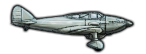 |
战间期小型机体 | 35 | 7 | 1 | 1 | 1 | 400 | 400 | 3 | 2/3 | 20 |
0.05 |
4 |
2 |
战间期小型机体 |
| 基础小型机身 | 40 | 9 | 1 | 1 | 1 | 425 | 550 | 4 | 2/3 | 20 |
0.05 |
5 |
3 |
基础小型机身 | |
| 改进型小型机体 | 45 | 11 | 1 | 1 | 1 | 450 | 650 | 5 | 3/4 | 20 |
0.05 |
6 |
3 |
||
| 先进小型机体 | 50 | 12 | 1 | 1 | 1 | 475 | 750 | 6 | 4/5 | 20 |
0.05 |
7 |
4 |
||
| 现代小型机体 | 55 | 18 | 1 | 1 | 1 | 500 | 900 | 6 | 4/5 | 20 |
0.05 |
10 |
4 |
||
| 超音速小型机体 | 65 | 25 | 1.5 | 1.3 | 1 | 900 | 1400 | 5 | 5/5 | 20 |
0.05 |
14 |
4 |
||
| 战间期航母机体 | 30 | 7 | 1 | 1 | 1 | 400 | 400 | 4 | 2/3 | 20 |
0.05 |
6 |
2 |
战间期小型机体 | |
| 基础航母机体 | 35 | 9 | 1 | 1 | 1 | 425 | 550 | 5 | 2/3 | 20 |
0.05 |
8.5 |
3 |
基础小型机身 | |
| 改进型航母机体 | 40 | 11 | 1 | 1 | 1 | 450 | 650 | 6 | 3/4 | 20 |
0.05 |
9.5 |
3 |
||
| 先进航母机体 | 45 | 12 | 1 | 1 | 1 | 475 | 750 | 6 | 4/5 | 20 |
0.05 |
11 |
4 |
||
| 现代航母机体 | 50 | 18 | 1 | 1 | 1 | 500 | 900 | 6 | 4/5 | 20 |
0.05 |
14.5 |
4 |
中型机体
用这些机体设计的飞机，其可担任的角色取决于其主要武器（选在最左侧武器槽的武器）：
- 重型战斗机
- 战术轰炸机
- Scout
| 机体 | 机动性 | 对空防御 | 对海攻击 | 对海瞄准 | 制空权 | 速度（公里/小时） | 航程（公里） | 重量 | Modules | 服役人力 | 燃料消耗 | 生产花费 | 每座工厂的资源使用量 | 前置条件 | |
|---|---|---|---|---|---|---|---|---|---|---|---|---|---|---|---|
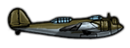 |
战间期中型机体 | 25 | 15 | 1 | 1 | 1 | 200 | 750 | 8 | 4/5 | 40 |
0 |
6 |
2 |
战间期中型机体 |
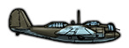 |
基础中型机身 | 30 | 18 | 1 | 1 | 1 | 325 | 900 | 8 | 4/5 | 40 |
0 |
8 |
3 |
基础中型机身 |
| 改进型中型机体 | 35 | 20 | 1 | 1 | 1 | 375 | 1100 | 12 | 4/6 | 40 |
0 |
10 |
4 |
||
| 先进中型机体 | 40 | 24 | 1 | 1 | 1 | 425 | 1300 | 14 | 5/6 | 40 |
0 |
13 |
5 |
||
| 现代中型机体 | 45 | 24 | 1 | 1 | 1 | 500 | 1500 | 16 | 5/6 | 40 |
0 |
14 |
5 |
大型机体
用这些机体设计的飞机，其可担任的角色取决于其主要武器（选在最左侧武器槽的武器）：
- 战略轰炸机
- 海上巡逻机
| 机体 | 机动性 | 对空防御 | 对海攻击 | 对海瞄准 | 制空权 | 速度（公里/小时） | 航程（公里） | 重量 | Modules | 服役人力 | 燃料消耗 | 生产花费 | 每座工厂的资源使用量 | 前置条件 | |
|---|---|---|---|---|---|---|---|---|---|---|---|---|---|---|---|
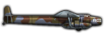 |
战间期大型机体 | 20 | 20 | 1 | 1 | 0.01 | 200 | 1000 | 16 | 4/6 | 80 |
0.16 |
16 |
3 |
战间期大型机体 |
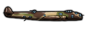 |
基础大型机体 | 25 | 25 | 1 | 1 | 0.01 | 225 | 1500 | 18 | 4/6 | 80 |
0.16 |
18 |
3 |
基础大型机体 |
| 改进型大型机体 | 30 | 35 | 1 | 1 | 0.01 | 300 | 2000 | 20 | 5/7 | 80 |
0.16 |
20 |
4 |
||
| 先进大型机体 | 35 | 50 | 1 | 1 | 0.01 | 350 | 3000 | 22 | 5/7 | 80 |
0.16 |
22 |
5 |
先进大型机体 | |
| 现代大型机体 | 40 | 54 | 1 | 1 | 0.01 | 400 | 3600 | 24 | 5/7 | 80 |
0.16 |
23 |
6 |
其他机体
这些专用机体是自成一体的设计，无法在飞机设计器中使用。
| 机体 | 机动性 | 对空防御 | 制空权 | 速度（公里/小时） | 航程（公里） | 可靠性 | 服役人力 | 燃料消耗 | 生产花费 | 每座工厂的资源使用量 | 可用任务 | 前置条件 | |
|---|---|---|---|---|---|---|---|---|---|---|---|---|---|
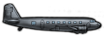 |
战间期运输机 | 10 | 20 | 0 | 400 | 1000 | 80% | 80 |
1 |
38 |
3 |
战间期运输机 | |
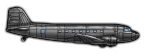 |
改进型运输机 | 10 | 20 | 0 | 450 | 1300 | 80% | 80 |
1 |
38 |
3 |
改进型运输机 | |
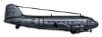 |
现代运输机 | 10 | 20 | 0 | 480 | 1800 | 80% | 80 |
1 |
38 |
3 |
现代运输机 | |
| 洲际轰炸机 | 12 | 55 | 0.01 | 450 | 12000 | 75% | 100 |
1.25 |
140 |
8 |
|||
| 母机式飞机 | 44 | 60 | 13 | 650 | 3600 | 80% | 100 |
1.32 |
200 |
8 |
引擎模块
更换引擎的设计花费为 6 空军经验。当不改变引擎数量时，直接把引擎升一级只需 3
空军经验。当不改变引擎数量时，直接把引擎升一级只需 3 空军经验。
空军经验。
| Module | 可用机体 | Range | 机动性 | 最大速度 | Thrust | 燃料消耗 | 生产花费 | 每座工厂的资源使用量 | 前置条件 | |
|---|---|---|---|---|---|---|---|---|---|---|
| 1x 发动机 I |
|
11 | 0.16 |
12 |
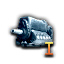 发动机 I | |||||
| 1x 发动机 II |
|
+20% | 16 | 0.16 |
14 |
发动机 II | ||||
| 1x 引擎 III |
|
+30% | 25 | 0.16 |
16 |
发动机 III | ||||
| 1x 引擎 IV |
|
+45% | 30 | 0.16 |
18 |
引擎 IV | ||||
| 2x 引擎 I |
|
19 | 0.32 |
24 |
发动机 I | |||||
| 2x 发动机 II |
|
+20% | 25 | 0.32 |
28 |
发动机 II | ||||
| 2x 引擎 III |
|
+30% | 38 | 0.32 |
32 |
发动机 III | ||||
| 2x 引擎 IV |
|
+45% | 45 | 0.32 |
36 |
引擎 IV | ||||
| 3x 引擎 I |
|
23 | 0.48 |
36 |
发动机 I | |||||
| 3x 引擎 II |
|
+20% | 32 | 0.48 |
42 |
发动机 II | ||||
| 3x 引擎 III |
|
+30% | 51 | 0.48 |
48 |
发动机 III | ||||
| 3x 引擎 IV |
|
+45% | 60 | 0.48 |
54 |
引擎 IV | ||||
| 4x 引擎 I | 32 | 0.64 |
48 |
发动机 I | ||||||
| 4x 引擎 II | +20% | 40 | 0.64 |
56 |
发动机 II | |||||
| 4x 引擎 III | +30% | 64 | 0.64 |
64 |
发动机 III | |||||
| 4x 引擎 IV | +45% | 75 | 0.64 |
72 |
引擎 IV | |||||
| 6x 引擎 I |
|
41 | 0.8 |
68 |
发动机 I | |||||
| 6x 引擎 II |
|
+20% | 56 | 0.8 |
80 |
发动机 II | ||||
| 6x 引擎 III |
|
+30% | 90 | 0.8 |
92 |
发动机 III | ||||
| 6x 引擎 IV |
|
+45% | 105 | 0.8 |
108 |
引擎 IV | ||||
| 1x 喷气引擎 |
|
-35% | +5% | +60% | 25 | 0.3 |
14 |
1 |
||
| 1x 轴流喷气引擎 |
|
-30% | +5% | +70% | 30 | 0.4 |
20 |
1 |
||
| 2x 喷气引擎 |
|
-35% | +5% | +60% | 38 | 0.6 |
28 |
1 |
||
| 2x 轴流喷气引擎 |
|
-30% | +5% | +70% | 45 | 0.8 |
40 |
2 |
||
| 3x 喷气引擎 |
|
-35% | +5% | +60% | 51 | 0.9 |
42 |
2 |
||
| 3x 轴流喷气引擎 |
|
-30% | +5% | +70% | 60 | 1.2 |
60 |
2 |
||
| 4x 喷气引擎 | -35% | +5% | +60% | 64 | 1.2 |
56 |
2 |
|||
| 4x 轴流喷气引擎 | -30% | +5% | +70% | 75 | 1.5 |
80 |
3 |
|||
| 6x 喷气引擎 |
|
-35% | +5% | +60% | 90 | 1.8 |
100 |
3 |
||
| 6x 轴流喷气引擎 |
|
-30% | +5% | +70% | 105 | 2.4 |
120 |
4 |
||
| 火箭引擎 I |
|
-70% | +10%（作用于拦截） | +55% | 20 | 0 |
12 |
2 |
||
| 火箭发动机 II |
|
-65% | +12.5%（作用于拦截） | +60% | 25 | 0 |
13 |
2 |
||
| 火箭发动机 III |
|
-60% | +15%（作用于拦截） | +65% | 30 | 0 |
14 |
2 |
武器模块
战斗机武器
把其中一种武器作为主要武器的飞机设计，被归类为战斗机或重型战斗机。
| Module | 可用机体 | 对空攻击 | 机动性 | 对地攻击机 | 重量 | 生产花费 | 设计花费 | 允许任务 | 前置条件 | |
|---|---|---|---|---|---|---|---|---|---|---|
| 2x 轻机枪 | +5 | 1 | 1 |
1 |
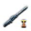 轻机枪 | |||||
| 4x 轻机枪 | +10 | 2 | 2 |
2 | ||||||
| 2x 重型机枪 | +9 | 2.5 | 1.5 |
1 |
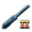 重机枪 | |||||
| 4x 重型机枪 | +18 | 1（作用于近距空中支援） | 5 | 3 |
2 | |||||
| 1x 机炮 I | +10 | -1 | 3 | 2.5 |
1 |
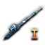 机炮 I | ||||
| 2x 机炮 I | +20 | -2 | 2（作用于近距空中支援） | 6 | 5 |
2 | ||||
| 1x 大型机炮 | +12 | -2 | 4 | 3 |
1 |
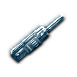 大口径机炮 | ||||
| 2x 大型机炮 | +24 | -4 | 2（作用于近距空中支援） | 8 | 6 |
2 | ||||
| 1x 机炮 II | +12 | -0.5 | 3 | 3 |
1 |
机炮 II | ||||
| 2x 机炮 II | +24 | -1 | 2（作用于近距空中支援） | 6 | 6 |
2 |
近距空中支援武器
把其中一种武器作为主要武器的飞机设计，被归类为近距空中支援。
| 类型 | 可用机体 | 机动性 | 对地攻击机 | 对海攻击 | 对海瞄准 | 重量 | 生产花费 | 设计花费 | 允许任务 | 前置条件 | |
|---|---|---|---|---|---|---|---|---|---|---|---|
| 小型弹舱 | –15（作用于近距空中支援、后勤打击、港口打击） | +8（作用于近距空中支援、后勤打击） | +2（作用于无任何海军轰炸机武器时的港口打击） | +4（作用于无任何海军轰炸机武器时的港口打击） | 2
6（作用于近距空中支援、后勤打击、港口打击） |
3 |
2 |
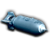 Bombs | |||
| 炸弹挂锁 | –15（作用于近距空中支援、后勤打击、对海攻击） | +6（作用于近距空中支援、后勤打击） | +2（作用于无任何海军轰炸机武器时的对海攻击） | +4（作用于无任何海军轰炸机武器时的对海攻击） | 0
4（作用于近距空中支援、后勤打击、对海攻击） |
1 |
2 |
||||
| 穿甲炸弹挂架 | –20（作用于近距空中支援、后勤打击、对海攻击） | +2（作用于近距空中支援、后勤打击） | +6（作用于无任何海军轰炸机武器时的对海攻击） | +4（作用于无任何海军轰炸机武器时的对海攻击） | 0
6（作用于近距空中支援、后勤打击、对海攻击） |
1 |
2 |
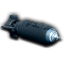 穿甲炸弹 | |||
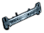 |
重型炸弹挂架 | –20（作用于近距空中支援、后勤打击、对海攻击） | +8（作用于近距空中支援、后勤打击） | +3（作用于无任何海军轰炸机武器时的对海攻击） | +4（作用于无任何海军轰炸机武器时的对海攻击） | 0
6（作用于近距空中支援、后勤打击、对海攻击） |
1 |
2 |
|||
| 反坦克机炮 I | –15 | +8 | 8 | 5 |
2 |
||||||
| 反坦克机炮 II | –20 | +15 | 12 | 8 |
2 |
||||||
| 火箭导轨 | +4（作用于近距空中支援、后勤打击） | 0
1（作用于近距空中支援、后勤打击） |
1 |
2 |
把其中一种武器作为主要武器的飞机设计，被归类为海军轰炸机或海军巡逻轰炸机。
装备了这些武器中至少一种的设计，会在 对海打击与
对海打击与 港口打击任务中禁用其他武器类型的条件效果。
港口打击任务中禁用其他武器类型的条件效果。
| 类型 | 可用机体 | 机动性 | 对空防御 | 对海攻击 | 对海瞄准 | 重量 | 生产花费 | 设计花费 | 允许任务 | 前置条件 | |
|---|---|---|---|---|---|---|---|---|---|---|---|
| 轻型鱼雷挂架 | –12（作用于对海攻击、港口打击） | +12（作用于对海攻击、港口打击） | +4（作用于对海攻击、港口打击） | 0
5（作用于对海攻击、港口打击） |
4 |
2 |
|||||
| 中型鱼雷挂架 | –12（作用于对海攻击、港口打击） | +17（作用于对海攻击、港口打击） | +8（作用于对海攻击、港口打击） | 0
8（作用于对海攻击、港口打击） |
4 |
2 |
|||||
| 重型鱼雷挂架 | –12（作用于对海攻击、港口打击） | +22（作用于对海攻击、港口打击） | +10（作用于对海攻击、港口打击） | 0
11（作用于对海攻击、港口打击） |
4 |
2 |
先进空射鱼雷 | ||||
| 制导反舰导弹 | –20（作用于对海攻击、港口打击） | +25（作用于对海攻击、港口打击） | +10（作用于对海攻击、港口打击） | 0
20（作用于对海攻击、港口打击） |
15 |
5 |
|||||
| 固定爆炸装药 | –5 | –10 | +6（作用于神风攻击） | +10（作用于神风攻击） | 0 | 4 |
5 |
|
战术轰炸机武器
把其中一种武器作为主要武器的飞机设计，被归类为战术轰炸机。
| 类型 | 可用机体 | 机动性 | 对地攻击机 | 对海攻击 | 战略轰炸 | 重量 | 生产花费 | 设计花费 | 允许任务 | 前置条件 | |
|---|---|---|---|---|---|---|---|---|---|---|---|
| 中型弹舱 |
|
–15（作用于近距空中支援、后勤打击、港口打击、战略轰炸） | +6（作用于近距空中支援、后勤打击） | +6（作用于无任何海军轰炸机武器时的港口打击） | +6（作用于战略轰炸） | 1
6（作用于近距空中支援、后勤打击、港口打击、战略轰炸） |
6 |
2 |
Bombs |
战略轰炸机武器
把其中一种武器作为主要武器的飞机设计，被归类为战略轰炸机。
| 类型 | 可用机体 | 机动性 | 对空防御 | 战略轰炸 | 对海攻击 | 对海瞄准 | 重量 | 生产花费 | 设计花费 | 允许任务 | 前置条件 | |
|---|---|---|---|---|---|---|---|---|---|---|---|---|
| 大型弹舱 |
|
–15 | +15（作用于战略轰炸） | +2（作用于无任何海军轰炸机武器时的港口打击） | 2
8（作用于港口打击、战略轰炸） |
9 |
2 |
Bombs | ||||
| 撼地者投弹机构 |
|
–20（作用于港口打击、战略轰炸） | +15（作用于战略轰炸） | +9（作用于无任何海军轰炸机武器时的港口打击） | +3（作用于无任何海军轰炸机武器时的港口打击） | 1
9（作用于港口打击、战略轰炸） |
9 |
2 |
| |||
| 火箭推进炸弹 |
|
–15 | +2 | +14（作用于战略轰炸） | +12（作用于无任何海军轰炸机武器时的港口打击） | 0
12（作用于港口打击、战略轰炸） |
12 |
2 |
||||
| 重型火箭推进炸弹 |
|
–18 | +2 | +16（作用于战略轰炸） | +18（作用于无任何海军轰炸机武器时的港口打击） | 0
15（作用于港口打击、战略轰炸） |
16 |
2 |
侦察设备
把其中一种武器作为主要武器的飞机设计，被归类为侦察机。
| 类型 | 可用机体 | 重量 | 生产花费 | 设计花费 | 允许任务 | 前置条件 | |
|---|---|---|---|---|---|---|---|
| 侦察相机 | 1 | 1 |
2 |
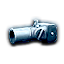 照相侦察 |
副武器
这些武器不能用作飞机的主要武器，因此不影响设计的分类。
| 类型 | 可用机体 | 布雷 | 重量 | 生产花费 | 设计花费 | 允许任务 | 前置条件 | |
|---|---|---|---|---|---|---|---|---|
| 空投水雷 | 0.05 | 2 | 2 |
2 |
海军布雷 |
辅助模块
这些模块可以装备在机体的辅助或特殊模块槽中。
特殊模块
以下模块可以在机体上装备任意数量。
| Module | 可用机体 | 对空防御 | Range | 重量 | 生产花费 | 设计花费 | 前置条件 | |
|---|---|---|---|---|---|---|---|---|
| 装甲板 |
|
+4 | -10% | 2 | 1 |
1 |
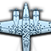 生存性研究 | |
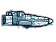 |
装甲板 |
|
+6 | -10% | 6 | 3 |
1 | |
| 装甲板 |
|
+8 | -10% | 15 | 5 |
1 | ||
| 副油箱 |
|
–2 | +50% | 2 | 1 |
1 |
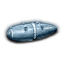 航程改进 | |
| 副油箱 |
|
–6 | +50% | 5 | 2 |
1 | ||
| 副油箱 |
|
–8 | +50% | 8 | 4 |
1 |
独特特殊模块
每种模块在机体上最多只能装备一个。
| Module | 可用机体 | 对空防御 | Range | 对海瞄准 | 重量 | 生产花费 | 每座工厂的资源使用量 | 设计花费 | 前置条件 | |
|---|---|---|---|---|---|---|---|---|---|---|
| 俯冲减速板 |
|
+4（作用于近距空中支援、无任何海军轰炸机武器时的对海攻击、无任何海军轰炸机武器时的港口打击） | +6（作用于近距空中支援、无任何海军轰炸机武器时的对海攻击、无任何海军轰炸机武器时的港口打击） | 2 | 2 |
1 |
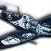 飞机构造 | |||
| 非战略物资使用量 |
|
–6 | -7.5% |
–2 |
1 | |||||
| 非战略物资使用量 |
|
–8 | -7.5% |
–2 |
1 | |||||
| 非战略物资使用量 |
|
–10 | -7.5% |
–3 |
1 | |||||
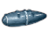 |
副油箱 |
|
+25% | 3 | 1 |
1 |
航程改进 | |||
| 自封油箱 |
|
+6 | 1 | 1 |
+1 |
1 |
生存性研究 | |||
| 自封油箱 |
|
+8 | 1 | 1.5 |
+2 |
1 | ||||
| 自封油箱 |
|
+10 | 1 | 2 |
+2 |
1 |
每种模块在机体上最多只能装备一个。
| 类型 | 可用机体 | 机动性 | 最大速度 | 水面侦察 | 潜艇侦察 | 扫雷 | 重量 | 生产花费 | 设计花费 | 允许任务 | 前置条件 | |
|---|---|---|---|---|---|---|---|---|---|---|---|---|
| Floats |
|
–5 | -30% | +5 | +3 | 1 | 1 |
1 |
飞机构造 | |||
| 水上飞机 |
|
-40% | +8 | +3 | 4 |
1 |
||||||
| 水上飞机 |
|
-40% | +12 | +5 | 4 |
1 |
||||||
| 扫雷线圈 | –5 | +0.1 | 20 | 3 |
2 |
海军扫雷 |
电子学
每种模块类型在机体上只能装备一个。例如，如果装备了无线电导航 II，那么无线电导航 I也不可用。
| Module | 可用机体 | 战略轰炸 | 夜间惩罚 | 水面侦察 | 潜艇侦察 | 重量 | 生产花费 | 设计花费 | 备注 | 前置条件 | |
|---|---|---|---|---|---|---|---|---|---|---|---|
| 空对空雷达 I | -20% | 1 | 4 |
1 |
作用于任务类型：拦截 | ||||||
| 空对空雷达 II | -40% | 2 | 6 |
1 |
作用于任务类型：拦截 | ||||||
| 空对地雷达 I | +4 | -30% | +10 | +5 | 2 | 2 |
1 |
作用于任务类型：海军巡逻、对海攻击、港口打击、战略轰炸 | |||
| 空对地雷达 II | +6 | -40% | +20 | +10 | 2 | 3.5 |
1 |
作用于任务类型：海军巡逻、对海攻击、港口打击、战略轰炸 | |||
| 轰炸瞄准具 I | +4 | 1 | 1.5 |
1 |
|||||||
| 轰炸瞄准具 II | +6 | 1 | 2 |
1 |
|||||||
| 无线电导航 I | +4 | -10% | 1 | 1 |
1 |
||||||
| 无线电导航 II | +6 | -20% | 1 | 1.5 |
1 |
防御炮塔
以下模块可以在机体上装备多个，具体上限取决于所使用的特定机体。
| Module | 可用机体 | 对空防御 | 对空攻击 | 最大速度 | 机动性 | 重量 | 生产花费 | 设计花费 | 前置条件 | |
|---|---|---|---|---|---|---|---|---|---|---|
| 轻机枪防御炮塔 | +1 | +1 | -3% | +0.5（作用于近距空中支援、战略轰炸、对海攻击、港口打击、后勤打击、海军布雷、海军巡逻） | 1 | 1 |
1 |
轻机枪 | ||
| 轻型机枪防御炮塔 2x | +2 | +1.5 | -6% | +1（作用于近距空中支援、战略轰炸、对海攻击、港口打击、后勤打击、海军布雷、海军巡逻） | 2 | 2 |
1 | |||
| 重型机枪防御炮塔 | +2 | +1.5 | -3.5% | +1（作用于近距空中支援、战略轰炸、对海攻击、港口打击、后勤打击、海军布雷、海军巡逻） | 2 | 2 |
1 |
重机枪 | ||
| 重型机枪防御炮塔 2x | +4 | +3 | -7% | +2（作用于近距空中支援、战略轰炸、对海攻击、港口打击、后勤打击、海军布雷、海军巡逻） | 4 | 4 |
1 | |||
| 机炮防御炮塔 | +4 | +3 | -3.7% | +2（作用于近距空中支援、战略轰炸、对海攻击、港口打击、后勤打击、海军布雷、海军巡逻） | 4 | 4 |
1 |
以下之一： | ||
| 机炮防御炮塔 2x | +8 | +6 | -7.5% | +4（作用于近距空中支援、战略轰炸、对海攻击、港口打击、后勤打击、海军布雷、海军巡逻） | 8 | 8 |
1 |
参考资料
- 关于模块数据，请参见/Hearts of Iron IV/common/units/equipment/modules文件夹中的参考文件。
- For flavor text, see reference files:
- plane_designer_l_english.yml.
- designer_l_english.yml.
- modifiers_l_english.yml.
| 政治 | 意识形态 • 阵营 • 国策 • 理念 • 政府 • 傀儡国 • 流亡政府 • 外交 • 世界紧张度 • 内战 • 占领 • 力量均势 |
| 生产 | 贸易 • 生产 • 建造 • 装备 • 燃料 • 军工组织 • 国际市场 |
| 科研与科技 | 科研 • 步兵科技 • 支援连科技 • 装甲科技（也包括 未拥有绝不后退）• 火炮科技 • 陆军学说 • 特种部队学说 • 海军科技（也包括 未拥有全民持枪）• Naval support科技 • 海军学说 • 空军科技（也包括 未拥有以血盟誓）• 空军学说 • Engineering科技 • Industry科技 • 特殊项目 • 科学家 |
| 军事与战争 | 战争 • 和平会议 • 陆军单位 • 陆战 • 师编制设计 • 坦克设计 • 陆军编制器 • 集团军 • 指挥官 • 作战计划 • 战斗战术 • 舰船 • 舰船设计（伦敦海军条约）• 海战 • 飞机设计 • 空战 • 经验 • 军官团 • 损耗与事故 • 后勤 • 人力 • 核弹 • 突袭 |
| 间谍活动 | 情报 • 情报机构 • 特工 • 任务 • 行动 |
| 地图 | 地图 • 省份 • 地形 • 天气 • 州 |
| 事件与决议 | 事件 • 决议 |